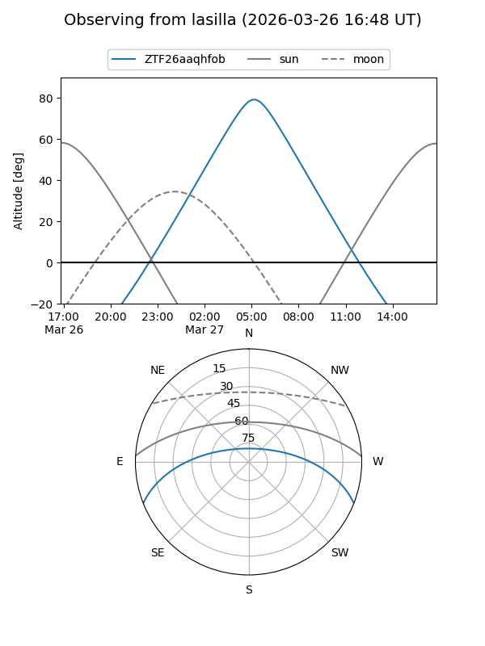
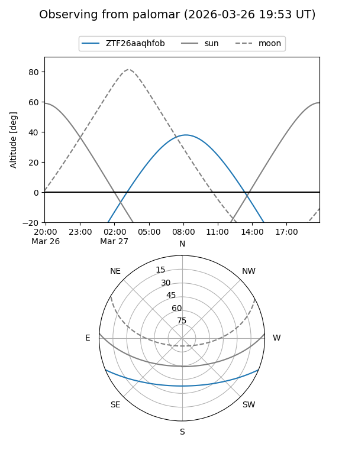

ZTF26aaqhfob
Target ZTF26aaqhfob at 2026-03-27 09:12
Aliases and brokers:
FINK: link
Lasair: link
ALeRCE: link
alt names
ZTF26aaqhfob (ztf,fink_ztf)
Coordinates:
equatorial (ra, dec) = 191.0177,-18.46944
equatorial (HMS+DMS) = 12:44:04.24,-18:28:09.99
galactic (l, b) = (300.4879,+44.36734)
Flags:
Photometry:
last ztfg=16.63
1 ztfg detections
Lightcurve
Visibility


Additional plots